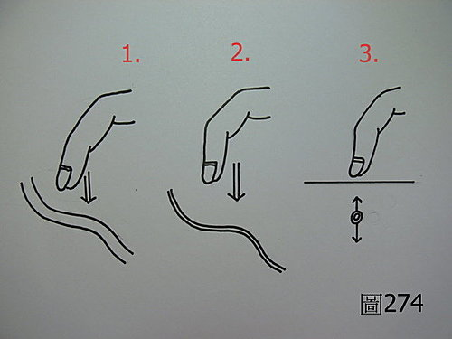
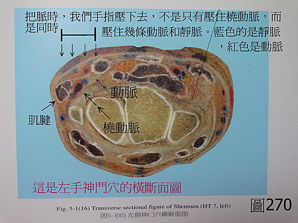
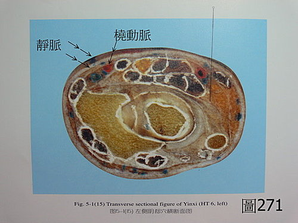
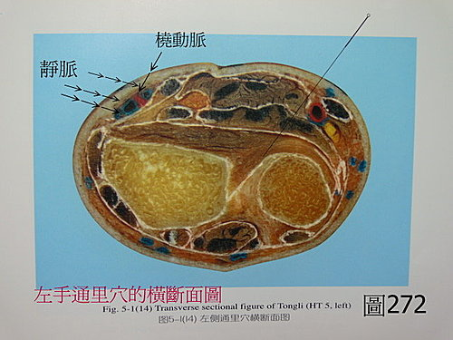
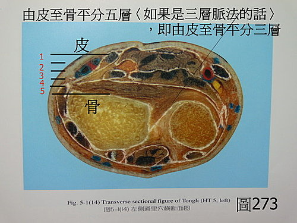
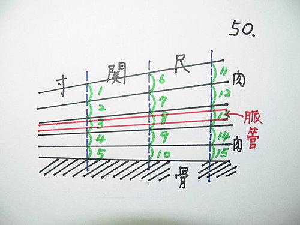
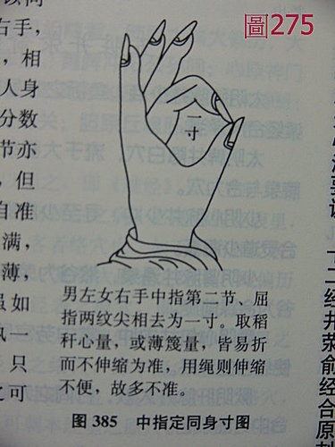
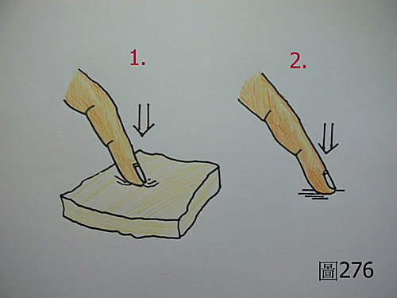

脈理醫理學 26.0：反按指法和脈位分層的一些疑惑
作者：陳建元
在上面第26條，已經說明了反按指法，在此茲就相關的細部問題，用問答的形式，再做一些細部的說明：
或問：把脈時，只是一條橈動脈在皮膚下的跳動，那只是一個連續的脈感而已，起初壓到脈，隨著指力增大，脈感逐漸消失，如此而已。最多只是這個脈的位置有高有低，但怎麼可能像部落格中所描述的把脈分成5層， 而且層與層間不一樣呢？
答：
通常學脈的人，老師會給〈圖274〉這張圖，這張圖是結合粗淺生理學後的概念，圖中1、2、3 所給的概念，就是一條橈動脈在皮膚下面跳動，並把它拿來對等中醫的〝把脈〞，而脈管則是假設成一條圓圓的橡皮管在跳動，只是有的橡皮管較粗，有的橡皮管較細而已，但不管如何，橡皮管的邊緣是圓滑而連續的，所以用手指摸起來，只是一個或粗或細的完整脈感在跳動，是不可能被分層，甚至被分成五層的？這是對於脈法分層的質疑。
當看到古人記載的〝浮按緊細，中按澀小，沉按實大〞、〝浮按緊細，中按把不到，沉按緩大〞、〝浮按滑大，中按虛，沉按細弦〞這類類似我們部落格中分層記載的經驗時，不免覺得無法接受，譬如〈圖269〉中，雖然脈管有大小，但摸起來應該依序為洪弦脈、弦脈、細弦脈而已，在一條脈管中，怎麼可能會發生〝浮按緊細，中按澀小，沉按實大〞這類奇怪的記載呢？就是一條脈管，也只是先按到管皮，再壓按則被壓扁而已（管徑稍微擴大一些些），怎麼可能會一下子變洪大，一下子變澀小，每層脈的紀錄都不一樣呢？這樣的解釋聽起來似乎很有道理，所以對於這種每層脈不同的詳細紀錄，往往感到不可思議。
這個問題出在哪裡呢？哪一個才是真相呢？其實〈圖274〉是錯誤的，類似的概念雖然被廣為宣傳和被用來解釋中醫的〝脈診〞，但其實這個模型是錯誤的。





真正的真相是這樣子，看〈圖270、271、272〉，這是把大體冷凍後，切片的真實人體，〈圖270〉神門穴、〈圖271〉陰郄穴、〈圖272〉通里穴的橫切面（圖中藍色是靜脈、紅色是動脈、黑色處是肌腱、白色處是筋膜，用來固定肌肉防止過度移動。【註：此三圖翻拍自《全身經穴應用解剖圖譜（英漢對照）》〈上海中醫藥大學出版社。作者嚴振國教授。2005年〉三圖版權為該書所有。】），相當於寸關一帶，各個地方的血管分佈都不一樣。 把脈的時候，以我們的手指壓下去的寬度，不會只有壓到橈動脈，而是會同時壓到其他動脈和其他靜脈，這些血管常常是靠在一起的，動脈和靜脈，內部都有肌肉，所以血管可緊縮或擴張，靜脈不會跳動，是摸不出來的，但橈動脈的跳動，會擠壓到旁邊的靜脈跟著跳，這時，靜脈就能很明顯的被摸出來了，所以你把脈時，其實摸到的東西，大部分不是橈動脈，輕按時，可能壓到的是靜脈的脈背，深按時，可能是橈動脈透過靜脈背所顯示出來的，摸到很寬的脈，也可能中間是橈動脈，兩側的脈暈是靜脈，‥‥‥；而因為人體的血液，主要是儲存在靜脈，隨著需要而釋出，所以靜脈的緊縮或擴張，是一種時時都在調節的頻繁動作，而又與旁邊的動脈擠壓，這些交互作用都是複雜的，也會讓你感覺到摸出來不同的脈象（有時候摸起來甚至會感覺很多條），事實上，古人這種脈要分層把分層記錄，才是正確的（這種分層，當然不是指把一條脈管分層，而是隨著指力的加大，紀錄每個深淺不同位置上，所觀察到的不同脈象型態），也確實有很多條脈動靜脈被一起壓著把，他們的深淺不一樣，有時候手指擠壓時，因為動靜脈的後面有筋膜的固定束縛，所以橈動脈下沉，兩旁的靜脈管補位進來，成為垂直的相疊著，如此就能解釋，為什麼會有〝浮按緊細，中按澀小，沉按實大〞〝浮按緊細，中按把不到，沉按緩大〞〝浮按滑大，中按虛，沉按細弦〞，這類的脈象了。又譬如劇烈疼痛時，橈動脈管徑縮小而拉緊，則兩旁的靜脈自然補位，於是脈疊成一疊，橈動脈的波動透過一疊厚厚的血管送出來，這就有可能形成〝伏脈〞了；又譬如大出血，則動脈空虛，兩旁的靜脈又把血液送出去緊急供應，故也空虛了，所以下指時，只摸到兩邊靜脈的邊緣，而中間的動脈是空虛的，這就有可能形成一條脈寬較大的〝芤脈〞了；而數條脈管在稍稍不同平面的收縮不同，所產生的緊張密度不同，反應在手指下的參差點點刺刺的不平感覺，這就是〝澀脈〞的基礎了。
古人當然不清楚這些生理學解剖學的東西，只是忠實的記錄著，從外部觀察所發現的脈象規律，這整個規律的研究和統合，就是〝脈學〞、〝脈診學〞，〝脈學〞或〝脈診學〞的研究，並不是研究橈動脈的跳動（即〈圖274〉那個模型），而是研究橈動脈的跳動和一堆靜脈重疊、推擠、甚至肌腱，肌腱膜的拉力和張力（筋膜；這些膜或結締組織，包在肌群的外面，可限制肌肉組織的移動，會限制動脈波的自由散開），交互作用後，最後綜合出來的脈態和頻率，古人所有脈學的資料，都是基於這個前提下所統計出來的資料，這點如果不能先釐清，常常一開口下手便是錯了。（一指壓下去，壓到那麼多東西，依手指頭感受器的分辨密度，是無法一一分辨出來的，若是兩個觸感小於0.2公分以下，則會混在一起只形成一個觸感〈譬如可用手指頭碰觸兩個鉛筆尖來測量，大抵兩個筆尖相靠近，小於0.2公分以下就分不出來了，會以為只有一個鉛筆尖〉，若是大於0.2公分以上距離的不同觸感，則會被分辨出來，而這些分辨出來的，和分辨不出來的混合體，即是我們所說的脈象、脈態。）
高階脈學與低階脈學不一樣，參看問答錄 160 條 把脈時要分層嗎？很多人是被〈圖274〉的概念給綁死了，所以自然會認為脈就是一條長長在皮膚下啊，然後自然的想像，當一條橡皮管受壓時，就是起初有脈，隨著手指力道漸漸加重而消失掉，脈感就是如此而已，所以會誤認脈感是連續的，又豈知真相是脈有很多條，手感並不一定會連續，壓到下面，說不定又壓到另一條的脈背或脈底，於是一條新的脈感又出現了，上述會有種種的誤解，是把〈圖274〉誤當真了， 這是對於生理學解剖學不瞭解的緣故，這種錯誤的概念一深植腦海後，便無法真實記錄你所發現的脈象，把到真相時，也不敢去記錄或真實面對，卻用腦中錯誤的概念，先裁頭裁尾，先裁去與錯誤模型不符的地方，或挑一個與模型較符合的，然後再猜測或概略的記錄說這是某某脈，這就變成在玩〝脈感〞的遊戲了，在這種情況下，每個人都以為自己的脈感才是真的，別人的都是假的（因為大家裁剪掉的部位都不一樣，大家的脈感自然不一樣），於是找不到共識，找不到規則，找不到系統，又如何學習？自然在那邊亂提倡脈學沒有模型、沒有規則、指感不同、無法教授、無法描述、無法學習的荒唐論調，其實反應的，只是自己找不到路，繞不出來的困境情緒而已，並不代表別人就是這樣子，而這又是一個誤用科學，卻又把科學的東西，變成不科學的例子了。而一些浮躁難耐的人，不敢面對真實的脈象，裁掉與錯誤模型不符的，不敢真實紀錄（那麼多條舒張縮收不同而一起壓，密度不同，怎麼可能會有一個完美的連續脈感？這種機會是很少的），自己在演戲，卻又大罵古人在演戲，這又是不夠謹慎不夠嚴謹了。
所以這些都是現實的問題，正因為層脈之間會有不同的表現，才要分層來記錄，若不是下指，會去按到幾條脈管，而是只有〈圖274〉假設的一條，當然就不用記錄得那麼複雜了。
或問：三層脈與五層脈的關聯性如何？為何不用傳統的三層呢？
答：
三層我用了好幾年，後來發現一些規則，自然也就分出五層了，五層脈並沒有什麼奇怪的地方，只是方便描述。
譬如感冒時脈浮，那這個脈浮是浮在皮膚上很浮的那種呢？還是沒那麼浮的那種呢？這就多出第2層了，那為什麼要這樣分呢？當然是病機不同，不然的話就沒有分的必要了。事實上，很浮的那種，是病比較輕，另外那種是稍重些（所以提示藥要下重些），所以為了區分，也就有必要去分了（當然還有區別其他病機的功用）。
第四層是沉，第五層也是沉，為什麼要分呢？這是用來區別內傷病的沉，一般只會到第4層，不會沉到第5層，第5層一般是急性疼痛（譬如急腹症），才會沉到第5層，分層當然是有觀察出來某些規律性，為了闡釋這些規律性才分的，否則根本沒必要分。
28脈一般是被歷代公認為對於脈法經驗，一個較完整的總結，其實在28脈中，五層脈已經呼之欲出了，譬如〝伏脈〞，這是一種脈位很沉的脈象，比一般的沉還沉，這就表示對於沉，至少要用兩個度量來標示，才會清楚；譬如浮脈，外感的脈浮，一般浮的較高，內傷虛損的脈浮，一般浮的較低，這也顯示對於浮，也至少要用兩個度量來標示，才會清楚。
或問：對於不同脈位中，不同型態的脈象，格主提倡用畫脈圖來記錄，有這種需要嗎？
答：
6脈的狀態，往往是複雜的，這不是用頭腦可以記得清楚的，脈圖是一種記錄，會記錄脈圖，當然不代表藥會開得準，但是不記錄脈圖，說藥能開的多準，這是在開玩笑。這是一個簡單的道理，做生意的人，你記不記帳？總不能說每種成本和銷售的數字都不記帳，這樣如何做生意呢？脈圖就等同西醫的檢查報告，裡面充滿了一堆數字，這些數字（脈象圖形）當然有各自代表的特殊意義，你不去做記錄，在治療之後，你拿什麼數據去比對治療的有效無效？（很多時候，單憑外候是看不出來的）
當然，並不是脈圖記錄完後，開藥就對號入座來開，這是不對的，脈圖是要你拿來和問診、望診、用藥‥‥‥，各方面來比對，然後才能找出疾病的根源所在，然後再對這個根源來下藥，就像在西醫的檢查報告中，看到血液各項數值都指向貧血，就一律開鐵劑來應對，這當然是不對的，必須還要溯源上去，如果貧血是因為經量過大、痔瘡出血、支氣管擴張等疾病而來的，應該要治療原發病才是重點。
‥‥‥‥‥‥‥‥‥‥‥‥‥‥‥‥‥‥‥‥‥‥‥‥‥‥‥‥‥‥‥‥‥‥‥‥
到目前為止，以上的問題，都是探討，因為臨床有深淺不同脈位，表現出不同脈態的現實，並不是從頭到尾只有一個脈感而已，所以對於不同深淺的脈態，就有記錄、分析、綜合研判的必要（當然，有時候遇到的情況比較簡單，遇到只有一個脈態的也有，總之就是忠實記錄原貌，如果很多層的現實紀錄，都是記錄著把不到什麼脈，自然整個綜合起來看，自然形成只有一個簡單脈態的狀況，參看問答錄 161 條 脈圖的疑問），而要做到這點，就必須要有相應的指法操作技術來配套，才能達到這個目的，以下的問題，開始探討相應的指法操作技術。
或問：如果脈位需要分層，如何去界定層與層之間的界線呢？
或問：難經中說壓脈的時候，我們對於施壓的力道，有3菽、6菽、9菽、12菽、15菽的差別，這看起來的確是5層脈法沒有錯，但問題是如何知道我壓到最底的力道，剛好是15菽 而不是16菽 或20菽呢？
或問：病患的手腕有胖有瘦， 有瘦到皮膚很薄到直接看到血管跳動的， 壓起來好像根本沒有很多空間可以下壓來分成浮中沉的，也有圓胖到找不到脈動的, 幾乎指下就只感到肉的... 。像這樣臨床很常見的極端，我們要怎樣確認浮中沉的位置？
答：
在第17～19條中，已經敘述了三層脈和五層脈的操作法，如果是老醫，看了已經能夠自由運用，但若是初學者，往往還需揣摹日久，才能抓到旨趣，甚至經過多年，尚無法體會指法是怎麼按的，也大有人在，所以容易有上述那些迷惑。在此把此技術操作程序描寫清楚 ，讀者只要按此技術程序一步一步踏實的操作，其實並不難，幾日訓練，便能實務上手。




分成兩部分來講：
一. 概念：
1. 在脈位的深淺上，由皮至骨平分成五層（若是傳統三層脈，即平分成三層）
〈圖273〉、〈圖50〉（註：〈圖50〉中的動靜脈應該有幾條，此處只簡化畫成一條當代表而已）。由〈圖50〉中，可以知道由側面看的時候，雖然寸（1～5〈1＝2＝3＝4＝5〉）、關（6～10〈6＝7＝8＝9＝10〉）、尺（11～15〈11＝12＝13＝14＝15〉）都是平分成五層，但事實上，皮到骨的距離，基本上，尺會稍稍大於關，而關又稍稍大於寸〈即11 + 12 + 13 + 14 + 15 ＞ 6 + 7 + 8 + 9 + 10 ＞ 1 + 2 + 3 + 4 + 5 〉，所以平分成五層之後，取距離的時候，尺部中的每一層，要取的距離，會稍稍大於關部，而關部中的每一層，要取的距離，又會稍稍大於寸部，關於這點，在實務操作取距離的時候，要稍微注意一下。
2. 同身寸的概念：
〝同身寸〞這個中醫專有名詞，學過針灸的，對這個名詞並不陌生，若是沒有學過的，會比較陌生。同身寸的意思，即〝等比例收放〞的意思，譬如〝關元穴〞，它的位置是在肚臍直下3寸處，那大人是在肚臍直下3寸處，小孩也是在肚臍直下3寸處，此處用來當成測量工具的〝寸〞，亦即針灸學上的寸，並不是一般市場上，用來測量東西長短，度量衡工具那種〝絕對的寸〞，而是一種〝相對的寸〞，〈圖275〉， 古人是以手掌中指的第二節，屈指相去兩紋尖的長度，當成〝一寸〞來使用，用此來當成取穴的測量工具，所以這是一種等比例收放的概念，大人的寸比較長，小孩的寸比較短，故以此相對的寸，來量取穴位的分寸處，則等比例收放而能準確。這種方式，一般認為是孫真人所發明，但其實自古以來，這種概念，也是一直應用在脈診的指法上，在寸關尺上的從皮至骨，不論大人距離長，小孩距離短，胖人手腕肉厚，瘦人手腕肉薄，一樣都是用等比例收放的概念，均分成五等份或三等份（傳統三層脈時）來取量即可。
二. 實務上操作手法的訓練：
1. 先練習有距離感的指法訓練：
先取海綿一塊，切成約一公分厚，放在桌上，作勢把脈壓按狀，以單一手指做壓按的訓練，先練習食指，食指練完練中指，中指練完再練習無名指，使每根手指都能靈活操作。以手指不用力、稍稍輕按海綿表層、使海綿表面僅塌陷0.1～0.2公分左右的力道，為第一層，以手指用力壓扁海綿、指力重按桌面為第五層（不必重到自己的手指會發抖、但也不能輕到別人隨手一抽，就能把海綿抽走），在兩個界限內，把指力均分成五等（由小至大；也等同壓按距離分成五種深淺的意思），反覆來做不同指力的收放、壓按的訓練，唯練習五層脈時，要依26條反按指法的操作程序來操作（如果訓練三層脈的話，不必用反按指，練習由上到下，分三種力道來壓按即可）。〈圖276〉之1。
2. 再練習無距離感的指法訓練：
上述的海綿，是有距離的，所以那是一種有〝距離感〞的指法訓練，訓練數十次之後，就可以開始訓練無距離感的指法訓練，抽去海綿，將手指直接按在桌面上，這是壓不出〝距離〞的，但操作法如同有海綿的時候一樣，以輕觸輕按不用力為第一層，以重按用力、但不必重到手指發抖為第五層，然後一樣在兩個界限內，把指力均分成五等，做不同發力的壓按訓練，訓練數十次。〈圖276〉之2。
通過上面兩個指法訓練之後，即可以運用於實務上寸關尺的壓按，在此處的概念上，距離和手指壓按的力道，是同時進行的，手指壓按的力道愈輕，代表壓按進去的距離愈淺，手指壓按的力道愈重，則代表壓按進去的距離愈深，而且在這邊，〝指力〞和〝距離〞要互相監控修正，因為在概念上，雖然〈圖273〉看起來，五層脈的距離劃得清清楚楚，也看得到每一層與每一層的邊界，但在實務上，這段從皮至骨的距離，非常的短，最多也是1公分左右而已，分成五層的時候，每層最多只有0.2公分而已，所以非常的短，因為非常的短，所以在指下操作時，是感覺不到每一層與每一層的邊界的，手指稍微用力些，則已經進入下一層，手指稍微減力些，已經自動退到上一層，所以在實務上，主要就是手指分成五種力道的收放訓練，而且這種力道，都不是指〝絕對力道〞，而是指〝相對力道〞，在脈法上，不管是〝壓按的距離〞（長度單位）還是〝指力施壓的輕重〞（重量單位），用的都是同身寸的概念。
〝指力〞和〝距離〞要互相監控修正，譬如有的人說，我只用很輕的指力，就已經壓到第五層了，這樣當然不對，已經壓到第五層，也就是已經壓到骨，再也壓不進去了，那你後面怎麼壓？所以〝指力〞和〝距離〞互相監控修正時，就知道指力太大了，你必須放輕指力，直到由皮至骨這段距離，剛好容納進去五種指力而分成五段。《難經》中說壓脈的時候，我們對於施壓的力道，有3菽、6菽、9菽、12菽、15菽的差別，其中的〝菽〞，是一種豆子，豆子是有重量沒錯，但要注意，這段話並不是要你用一個〝絕對重量〞來壓脈，這段話想說的，是要告訴你同身寸，指力逐漸等比例遞增壓按的概念，有的人會問，我怎麼知道我壓到最底的力道，剛好是15菽，而不是16菽或20菽呢？這些都不是重點，因為用的都是同身寸的概念，而不是絕對重量的概念，依等比例收放時，指力分成五等，剛好配合五層的深淺距離，如果我壓到最底的力道，是20菽單位的話，則力道比例自然是20、16、12、8、4單位，那你要看看你用相對4單位的力道壓按皮膚時，壓進去的距離，是不是剛好是由皮至骨的約1/ 5 ？如果是的話，那就是正確的指力，如果不是的話，當然就不對了，這時，距離與指力重量就要互相校正，加重或放輕指力，校正到兩者等比例能互相吻合，才當成正確的指力。
上述的兩個訓練，第一個訓練，就是訓練距離與指力壓按重量的等比例相對收放，熟了之後，第二個訓練，則捨去距離感，而手指力道，依然能夠等比例的收放，故這兩個訓練之後，就能應付臨床上的種種清況，不管來人手腕皮膚肌肉層的厚薄，大人或是小孩，只要稍測一下皮膚與骨的距離，自然就會等比例的去取脈。
【引用請先來信告知徵求同意，若有涉及販售營利等商業行為，版權所有拷貝盜用必究。】
【藥王脈學講壇】http://blog.xuite.net/drjychen/twblog